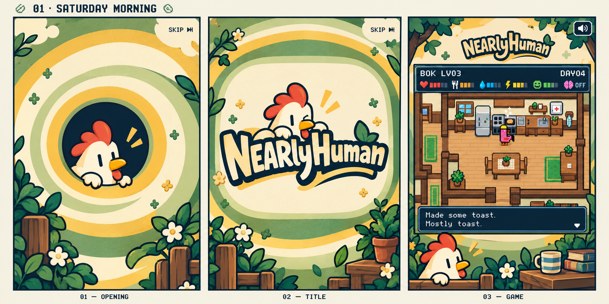

<!doctype html>
<html lang="en">
<meta charset="utf-8">
<meta name="viewport" content="width=device-width,initial-scale=1">
<title>NEARlyHuman · Four surrounding websites</title>
<style>
*{box-sizing:border-box}html,body{margin:0;height:100%;background:#eeeada;color:#172d3b;font-family:system-ui,sans-serif}body{display:flex;flex-direction:column;padding:14px;gap:10px;height:100dvh}header{display:flex;align-items:center;justify-content:space-between;gap:12px;flex-wrap:wrap}h1{font-size:clamp(17px,2.3vw,24px);margin:0}header a,footer a{color:#315f55}nav{display:flex;gap:6px;flex-wrap:wrap}button{font:inherit;font-size:14px;padding:9px 13px;background:#f9f5e8;color:#172d3b;border:1px solid #92a28b;cursor:pointer;border-radius:4px}button[aria-pressed=true]{background:#172d3b;color:#fff6d6;border-color:#172d3b}main{flex:1;min-height:0;display:flex;align-items:center;justify-content:center}img{display:block;width:100%;height:100%;object-fit:contain}footer{display:flex;justify-content:space-between;gap:12px;font-size:13px;line-height:1.4}footer p{margin:0;max-width:920px}@media(max-width:600px){body{padding:10px}button{font-size:12px;padding:8px}footer{font-size:12px}header a{font-size:12px}}
</style>
<header><h1>NEARlyHuman · A home for the game</h1><a href="README.md">Concept notes</a></header>
<nav aria-label="Visual direction"><button aria-pressed="true" data-board="0">01 · Saturday Morning</button><button aria-pressed="false" data-board="1">02 · Cozy CRT</button><button aria-pressed="false" data-board="2">03 · Come On In</button><button aria-pressed="false" data-board="3">04 · Cartoon Channel</button></nav>
<main></main>
<footer><p id="caption">A rooster-led cartoon premiere. Read left to right: opening → transition → game.</p><a id="original" href="01-saturday-morning.png">Open original</a></footer>
<script>
const boards=[
 ['01-saturday-morning.png','Saturday Morning: opening iris, cartoon title, game in its finished surrounding website','A rooster-led cartoon premiere. Read left to right: opening → transition → game.'],
 ['02-cozy-crt.png','Cozy CRT: television switches on, channel ident, game fills its screen','A warm illustrated television. Read left to right: switch on → channel ident → game.'],
 ['03-come-on-in.png','Come On In: house exterior, window opens, game inside the window','A visit to the NPC’s home. Read left to right: house → window opens → game.'],
 ['04-cartoon-channel.png','Cartoon Channel: station ident, graphic wipe, game within the broadcast design','A bold cartoon-channel ident. Read left to right: title → graphic wipe → game.']
];
document.querySelectorAll('[data-board]').forEach(button=>button.onclick=()=>{const data=boards[Number(button.dataset.board)];document.querySelectorAll('[data-board]').forEach(b=>b.setAttribute('aria-pressed',String(b===button)));const image=document.querySelector('#board');image.src=data[0];image.alt=data[1];document.querySelector('#caption').textContent=data[2];document.querySelector('#original').href=data[0];});
</script>
</html>
